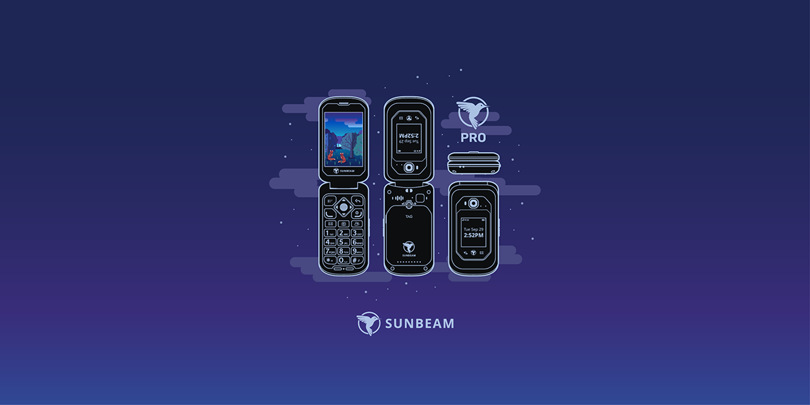
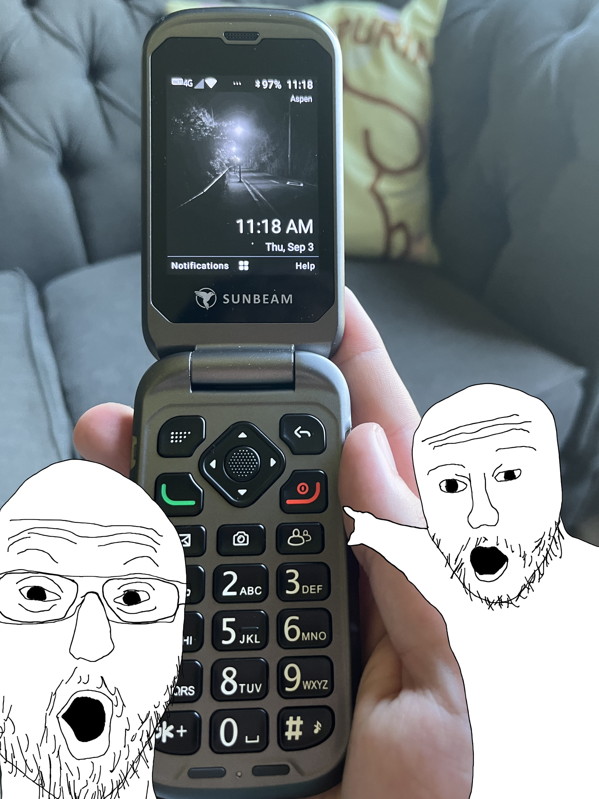

I have a flip phone.
I bought the flip phone in January. I use it so I don't go on social media as much.

Overview
My phone is a Sunbeam F1 Pro. Specs isn't exactly something you buy a flip phone for, the battery last 2 days, the screen is large, and the camera is pretty bad, but none of that matters.

Negatives
I have had some issues navigating daily life without a smart phone. 2FA is possibly the biggest obstacle. Fortunatly my phone has 2FA, but I require specific apps, like microsfot 2fa, steam gaurd, or my school ID. Another big issue is the lack of banking apps. I find it extremely hard to keep a mental track of my spending when my check ins on the real balance are so few and far in between.
Positives
While there are some negatives my overall experience with the phone has been very positive. I find it easier to focus especially at work and school. My biggest vice was Youtube, so I have blocked it on my computer aswell. I am very happy with my purchase.